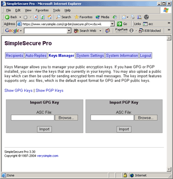

SimpleSecure Usage: Key Management
SimpleSecure Usage: Key Management
 The Key Mangement section of the admin control panel allows you to view the keys in your GPG/PGP keyring and to also import new keys.
Keys to be imported should be in the form of an .asc file. Both GPG and PGP natively export public keys in .asc format.
Once you have imported a key, it is available to SimpleSecure and you may specify the keyname in the EncryptKey field in any RecipientRecord.
NOTE: SimpleSecure does not require the secret/private key to work. Only the public key for each recipient is needed.
© copyright 1997-2004, verysimple, inc.